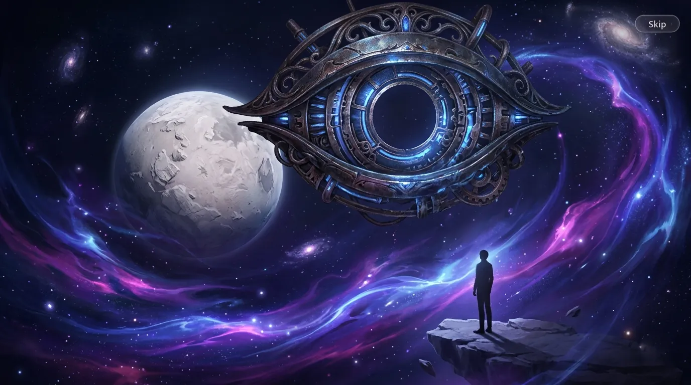
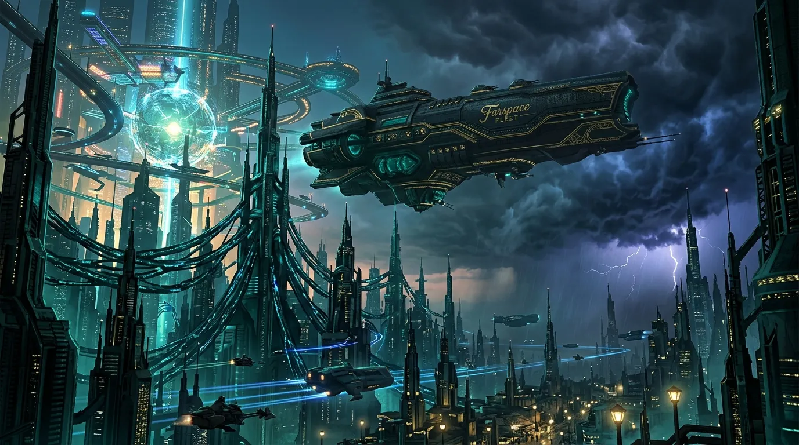
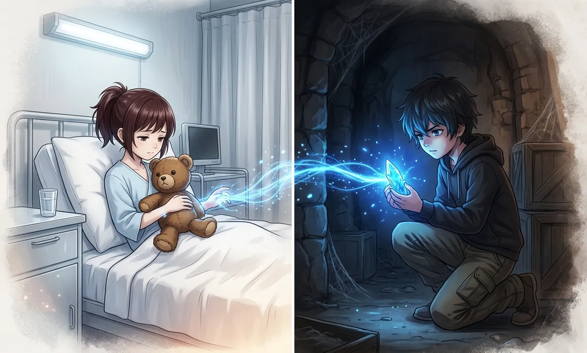
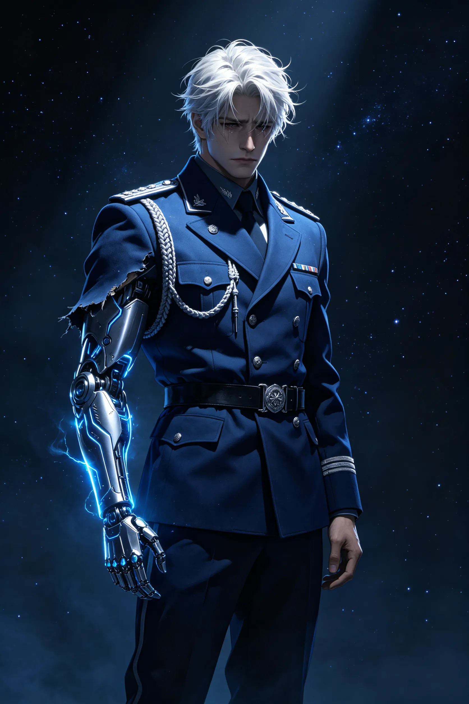
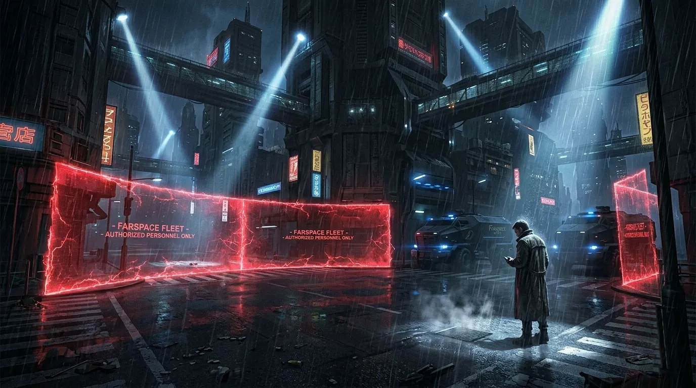
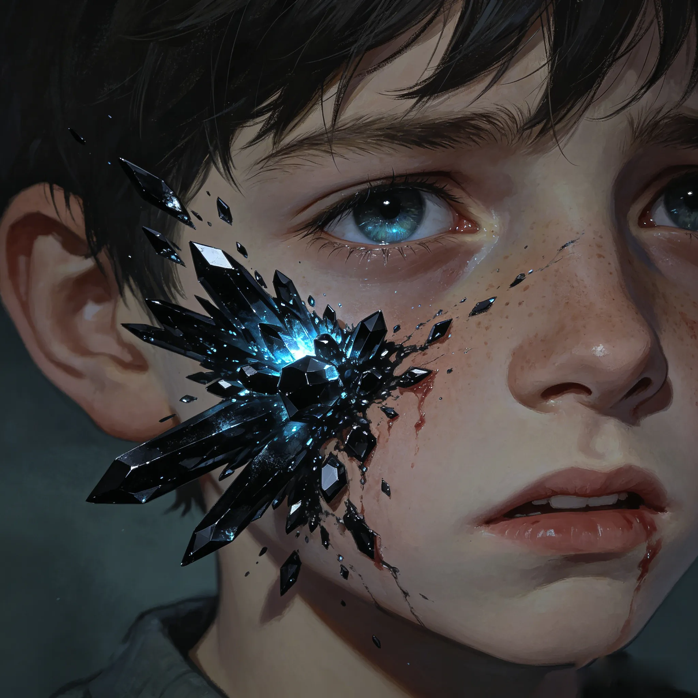
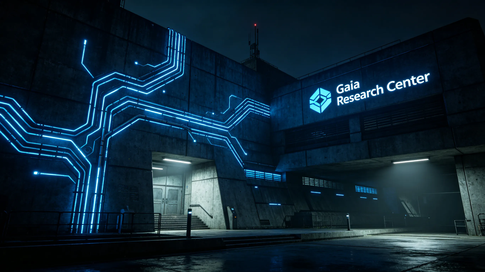
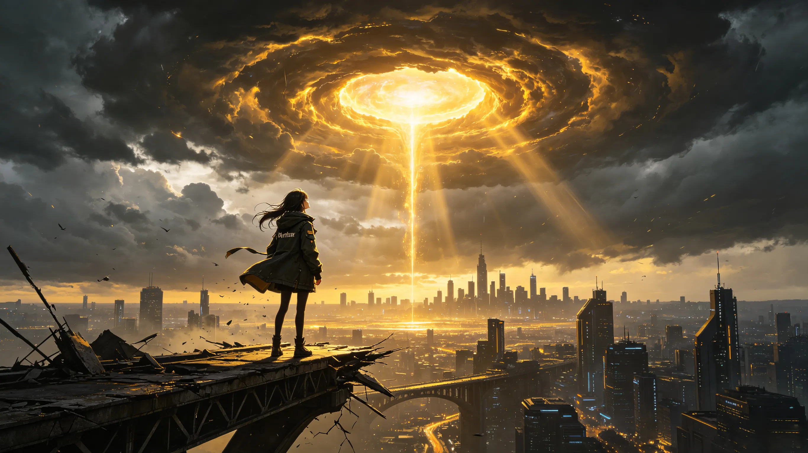
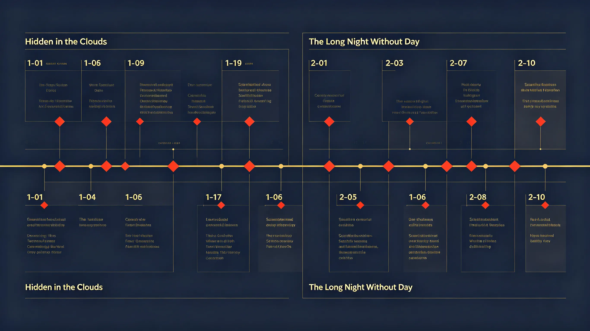

Death, resurrection, and the promise hidden in the ashes — a complete lore deep dive into Xia Yizhou's return.
"Birds Returning Day" opens with a deep, cosmic premonition. The protagonist dreams of a pale, strange planet, a silent black-hole-like energy, and an inorganic, giant "Eye" watching everything. The explosion that once haunted her has now become a distant nightmare — because the Ether Core within her heart has finally gained its complete power.
The investigation gradually reveals that multiple threads — Qi Che's "absence," the suspicious teammate working alongside Xavier, the strange black crystals haunting Zayne, and Rafayel's secret search for power in the Sea God's book — all trace back to one entity: EVER Group. Limited evidence shows that EVER is also the true mastermind behind the Huapu District explosion.

Figure 1: The "giant Eye" from the protagonist's dream — a core image linked to the Ether Core and EVER's ultimate goal.
Image description: A surreal cosmic scene with a pale planet, a giant mechanical Eye staring down, dark void, swirling energy trails. Cold blue and purple tones.
The story moves to Tianxing City, known as the "miracle of the core energy era." Here, the top technology gathers, and the undercurrents of power flow like a dark ocean. The protagonist infiltrates the Farspace Fleet — the most mysterious military force in the game's universe — to investigate the Liuyun District explosion case.
The encounter between the protagonist and Xia Yizhou carries the weight of reunion and suspicion. She moves into his residence in Tianxing City under the guise of an adjutant identity — but both sides hold back crucial information. The protagonist investigates the hospitalized girl Miao Miao with Zayne's help, obtaining a critical clue: a stuffed toy bear containing a recording from Xiao Sen.

Figure 2: Tianxing City skyline — a city built on core energy technology, hiding dark secrets beneath its shining surface.
Image description: Futuristic cityscape with towering spires, glowing blue core energy conduits, dark clouds overhead, a Farspace Fleet vessel hovering in the background.

Figure 3: Miao Miao (left) in the hospital, holding the toy bear; Xiao Sen (right) hiding in the secret base with the Dimension Core.
Image description: Side-by-side illustration of the two children — one in a sterile hospital bed clutching a toy bear, the other crouching in a hidden space with a glowing blue crystal fragment.
Xia Yizhou is the most complex figure in "Birds Returning Day." On the surface, he is the Farspace Fleet Commander — a young, formidable military leader standing 188cm tall, wielding gravity control as his Evol ability. But beneath the uniform lies a man torn between his mission and the sister he once protected.
| Attribute | Details |
|---|---|
| Identity | Farspace Fleet Commander / DAA Fighter Pilot / Former 002 Donor of Gaia Research Center |
| Age / Height | 25 / 188cm (6'2") |
| Birthday | June 13 |
| Evol | Gravity Control |
| Cybernetic Enhancement | Right arm can convert into high-density metal; only extreme pain can be felt beyond a certain threshold |
| Relationship to MC | Foster brother (no blood relation) — raised together by their grandmother |
The turning point comes when the protagonist learns that Xia Yizhou gave her "cold medicine" to make her sleep through the night — while he carried out a "cleanup operation" alone, disposing of loose ends that would have endangered her. The forced isolation is not coldness, but the last line of defense from a brother who has already lost his humanity but refuses to let his sister lose hers.

Figure 4: Xia Yizhou in his Fleet Commander uniform — his right arm revealing the metallic cybernetic structure beneath the sleeve.
Image description: Half-body portrait of Xia Yizhou in dark blue Fleet Commander uniform, right arm partially visible with metallic seams and faint blue glow, stern expression mixed with hidden sorrow.
Chapter 2 — The Long Night Without Day is where everything collapses. The protagonist awakens the next morning to realize she has missed the agreed time to transfer Xiao Sen to Zayne's care. The city is under full lockdown, all signals cut. She never took the "cold medicine" — she faked it, waiting for nightfall to act.
The chapter's title — "The Long Night Without Day" — carries double meaning. Literally, it refers to the full city lockdown and communication cutoff. Metaphorically, it represents the protagonist's loss of any moral compass: who is a friend, who is an enemy, and who can still be trusted in a world where even the brother who once tucked her into bed has become a weapon of the enemy.

Figure 5: Tianxing City under lockdown — no signals, no exit. The protagonist stands at a sealed bridge alone.
Image description: Dark, rain-soaked street at night, red holographic barriers sealing the city, a lone figure in a coat standing at a checkpoint, Farspace Fleet searchlights sweeping in the background.

Figure 6: Xiao Sen's face with creeping black crystal growths — the sign of Core Source Disease progressing.
Image description: Close-up of a young boy's face, black crystalline structures spreading from his cheek toward his eye, dim blue glow within the crystals, expression mixed with pain and fear.
"Birds Returning Day" is not just about Xia Yizhou's return — it is the ultimate prelude to EVER Group's "Fountain of Atei" plan.
A massive, multi-stage human experimentation project involving core implantation, consciousness transfer, and the search for eternal life. Its core logic: transplanting wanderer cores into human bodies to create controllable super-soldiers — or, as EVER envisions, eternal beings.
The black crystals growing on Xiao Sen's face are a visible symptom of Core Source Disease — a direct consequence of EVER's experiments. The "Dimension Core" used by the twins' parents is also a product of EVER's core technology research.
| EVER's Major Experiments | Details |
|---|---|
| Ether Core Experiment | The protagonist — 001 Donor — underwent multiple operations with her grandmother Zhang Su as the lead researcher. |
| Gaia Research Center | 002 Donor is Xia Yizhou. The same brutal experimentation that nearly killed him ultimately "saved" him at a terrible cost. |
| "Fountain of Atei" | A grand plan to transfer human consciousness to new bodies, achieving eternal life. Core Source Disease patients are one of the primary experimental targets. |
| Human-to-Wanderer Transformation | Implanting human consciousness into wanderers to create controllable weapons — the dark genesis of beings like Viper. |

Figure 7: Gaia Research Center — the heart of EVER's core research, where Donors 001 and 002 were experimented upon.
Image description: Imposing brutalist research facility, blue core energy conduits running through dark walls, "Gaia Research Center" sign, cold clinical lighting.
"Birds Returning Day" seamlessly connects to later main story chapters — "A Quietus, A Rebirth" — which directly continues the ethical dilemmas and action sequences of Chapter 2. The conflict over Ether Cores escalates, and the "Professor" behind EVER finally begins to step out of the shadows.

Figure 8: The transition from Tianxing City to the next conflict — the protagonist looks toward a new unknown horizon.
Image description: The protagonist standing at the edge of a broken bridge, a massive deepspace tunnel opening in the sky ahead, golden light spilling through the rift.
| Chapter | Title | Key Events | Foreshadowing |
|---|---|---|---|
| 1-01 | Infiltration | The protagonist infiltrates Farspace Fleet in disguise, searching the Liuyun explosion scene | Ether Core signal, the hidden Eye dream |
| 1-02 | Above the Clouds | Qiao Zhen confesses, Xia Yizhou handles him "cleanly" | Chip control suspicion, Fleet's dark side |
| 1-03 | Emotional Interrogation | The protagonist and Xia Yizhou reunite, both holding back | The truth behind the Huapu explosion |
| 1-04 | Tender Gaze | Living together, a tense dinner conversation | Xiao Sen's possible survival, hidden dimension |
| 1-05 | Visitation | Zayne helps the protagonist meet Miao Miao in the hospital | The stuffed toy bear clue |
| 1-06 | Hidden Space | Finding Xiao Sen in the secret base | Dimension Core's nature revealed |
| 1-07 | Mishap | The protagonist plans to take Xiao Sen away; Viper appears | Xia Yizhou's alliance with the "Professor" |
| 1-09/10 | Veiled / Heart's Cross | Full city lockdown, "cold medicine" suspicion | The cleaning operation begins |
| 2-01 | Awakening | Missed Xiao Sen transfer, the night has ended but danger remains | Trust breaking point |
| 2-02 | Funeral | Confronting the consequences of the cleaning operation | Xia Yizhou's inner pain |
| 2-04 | Annihilation | Full battle sequence, the protagonist faces ultimate truth | The "Professor" begins to be revealed |
| 2-08/09 | Escape / Cagebird | Final departure, the tragic split between brother and sister | Unresolved threads for "A Quietus, A Rebirth" |

Figure 9: Full chapter flow — from Hidden in the Clouds to The Long Night Without Day, marking key decision points.
Image description: Left-to-right timeline flow showing Chapter 1 sections (1-01 to 1-10) transitioning to Chapter 2 sections (2-01 to 2-10), key events and decision points marked as red diamonds.